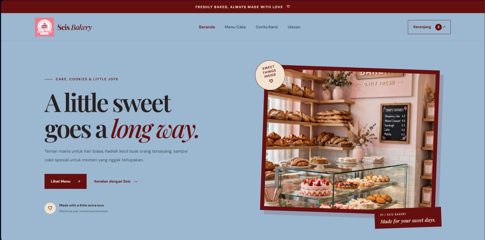
WEB DEVELOPMENT · INDIVIDUAL PROJECT
Seis Bakery
Website toko kue dengan katalog produk, keranjang belanja, checkout, pilihan ambil di toko atau delivery, serta pembayaran melalui transfer bank.
Project akademik dan karya yang aku kerjakan sendiri maupun bersama tim.

Website toko kue dengan katalog produk, keranjang belanja, checkout, pilihan ambil di toko atau delivery, serta pembayaran melalui transfer bank.
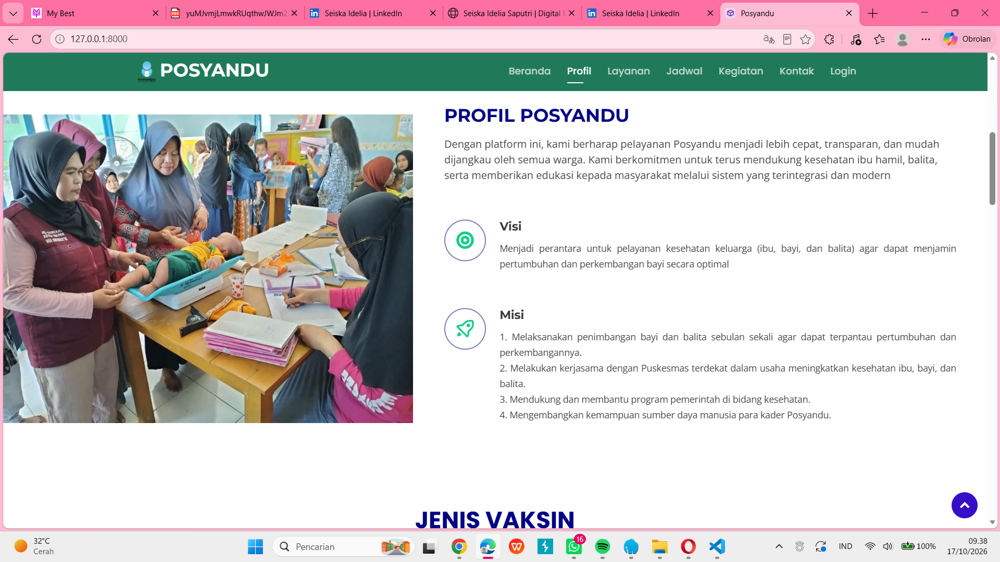
Website informasi Posyandu untuk membantu penyajian profil, layanan, jadwal, dan informasi kegiatan.
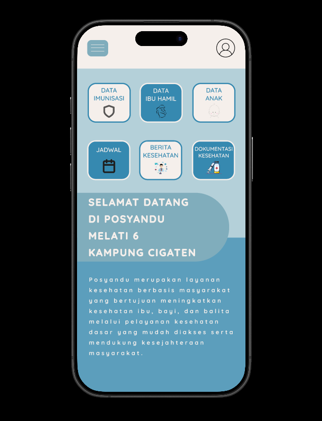
Rancangan antarmuka aplikasi Posyandu Melati 6 yang dikerjakan bersama kelompok.
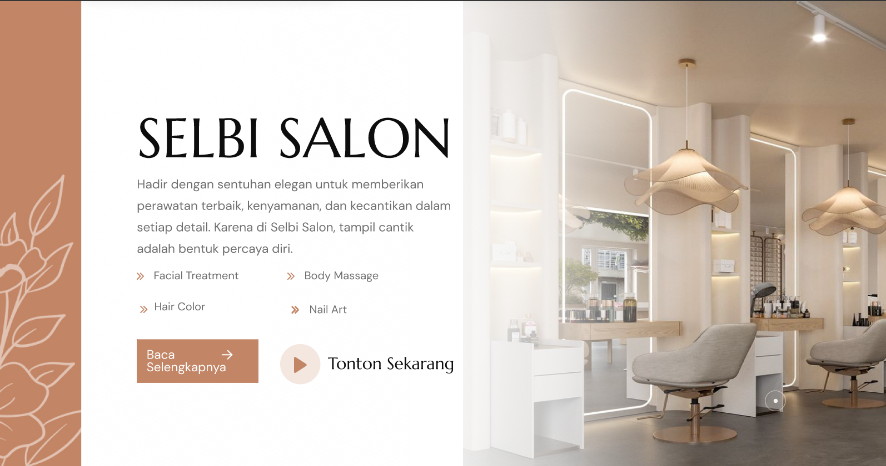
Project kelompok berupa konsep website dan UI/UX untuk layanan Selbi Salon.
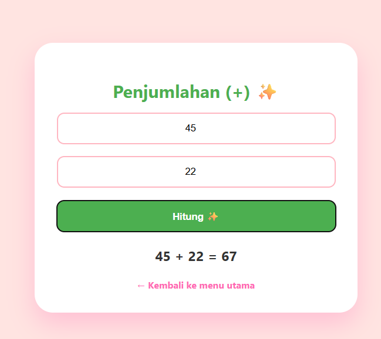
Website kalkulator sederhana dengan pilihan operasi aritmetika menggunakan HTML, CSS, dan JavaScript.
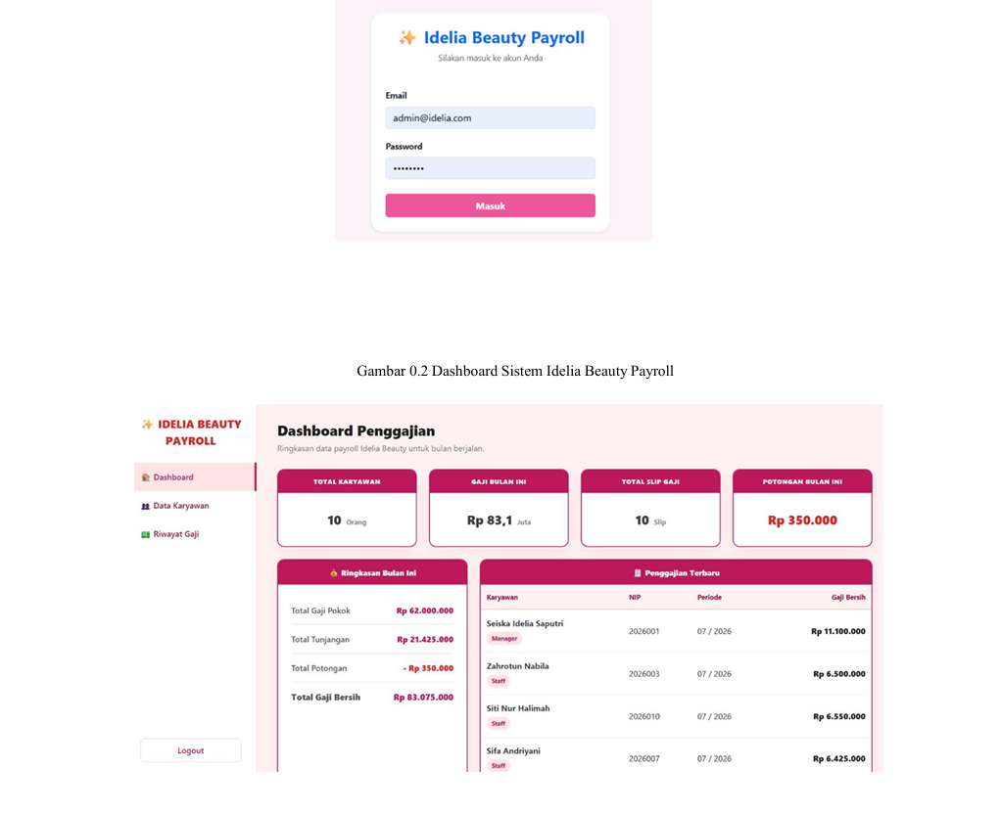
Project sistem informasi yang berfokus pada pengelolaan data karyawan dan proses penggajian.
Selain project teknologi dan akademik, aku juga senang membuat konten beauty dan mengeksplorasi pengalaman bersama brand. Berikut beberapa momen yang aku dokumentasikan.
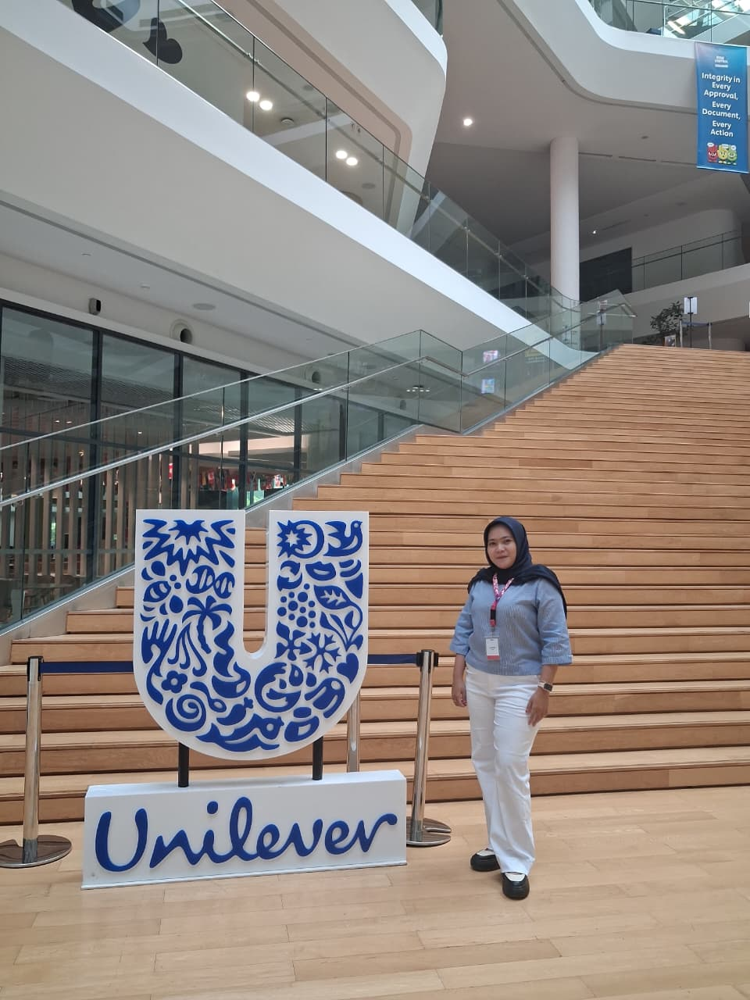
Mendokumentasikan pengalaman berkunjung ke Unilever Indonesia sebagai bagian dari perjalanan dan ketertarikanku pada dunia brand serta content creation.
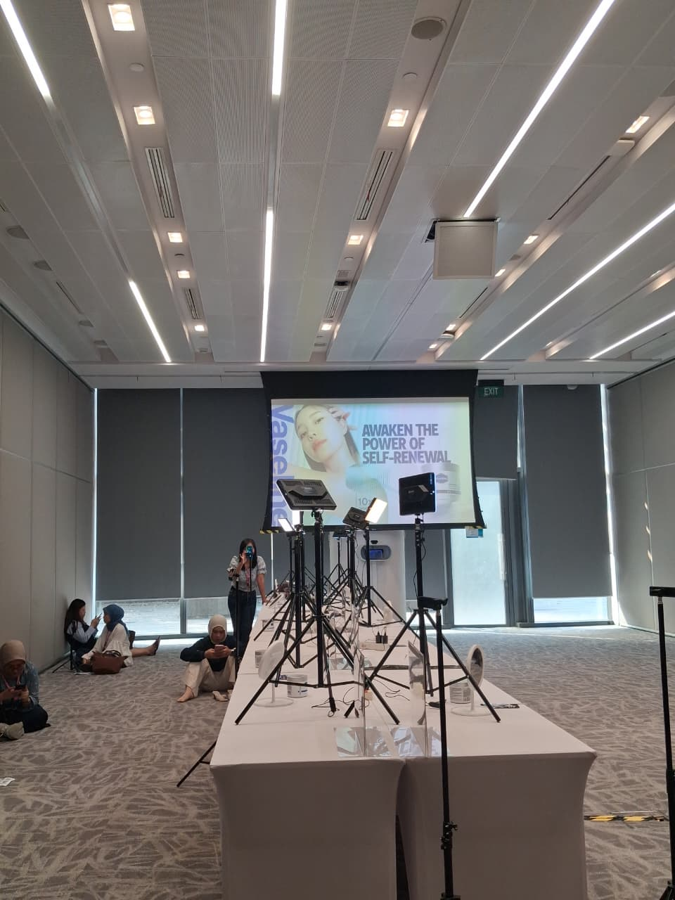
Dokumentasi area produksi konten saat kegiatan Unilever, termasuk setup tripod dan layar presentasi. Foto ini masuk ke pengalaman content creation, bukan project website.
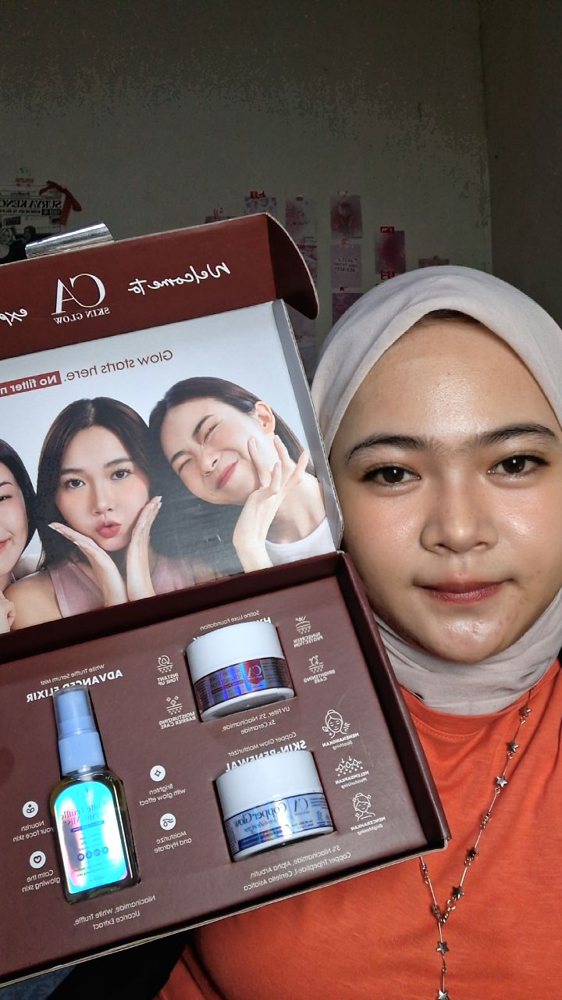
Membagikan momen menerima PR package dari brand beauty untuk peluncuran produk terbaru. Pengalaman ini menambah ketertarikanku pada storytelling visual dan konten kecantikan.
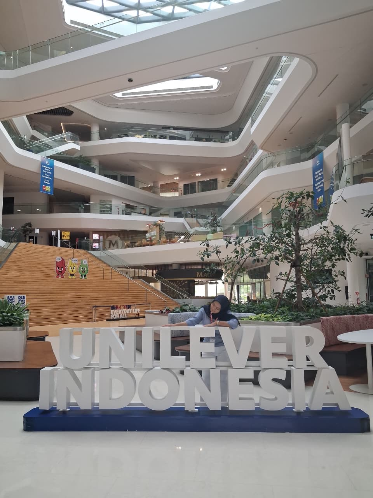
Dokumentasi personal saat mengeksplorasi produk kecantikan dan ide konten beauty. Foto ini menjadi bagian dari minatku pada konten visual dan produk.
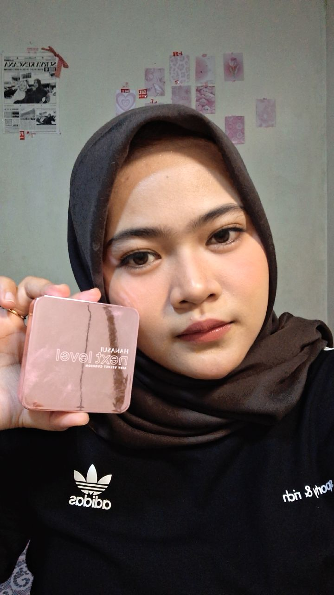
Mengabadikan momen kegiatan dan pengalaman secara personal, sekaligus melatih cara bercerita melalui foto.